Vérifier des binaires : Windows (Débutant)
Les fichiers binaires Monero devrait être vérifiés avant extraction, installation ou utilisation de l'application Monero. C'est l'unique manière de vous assurer que vous utilisez le binaire officiel Monero. Si vous recevez un binaire contrefait (p. ex. hameçonnage, HDM, etc.), suivre ce guide vous évitera de vous faire piéger.
Pour protéger l'intégrité des binaires, l'équipe Monero fournit une liste cryptographiquement signée de tous les hachages SHA256. Si le binaire que vous avez téléchargé a été altéré il produira un hachage différent de celui fourni dans le fichier.
Voici un guide pour débutant pour le système d'exploitation Windows qui s'appuiera presque exclusivement sur des interfaces graphiques (GUI). Il couvrira tout le processus d'installation des applications requises, d'import de la clef de signature, de téléchargement des fichiers nécessaires et enfin de vérification de l'authenticité de votre binaire.
Table des matières
1. Installateur de Gpg4win
- 1.1. Obtenir l'Installateur de Gpg4win
- 1.2. Utiliser l'Installateur Gpg4win
2. Importer la Clef de Signature
- 2.1. Télécharger la Clef de Signature
- 2.2. Initialiser Kleopatra
- 2.3. Vérifier la Clef de Signature
3. Vérifier le Fichier de Hachage
- 3.1. Télécharger le Fichier de Hachage
- 3.2. Vérifier le Fichier de Hachage
4. Vérifier le Fichier Binaire
- 4.1. Télécharger le Binaire
- 4.2. Vérifier le Binaire
1. Utiliser l'Installateur de Gpg4win
Cette rubrique couvre l'installation de l'application de cryptographie. Windows n'est pas livré avec les outils nécessaire à la vérification de vos binaires. Pour installer ces outils vous pouvez utiliser l'installateur Gpg4win.
1.1. Obtenir l'Installateur de Gpg4win
1.1.1. Télécharger Gpg4win
Dans un navigateur internet, rendez-vous sur la page gpg4win.org et téléchargez l'installateur en cliquant sur le bouton vert.

Vous serez redirigé vers une page de dons. Si vous ne souhaitez pas faire une donation, sélectionnez $0, puis vous pourrez cliquer sur Télécharger (Download).

Cliquez sur Enregistrer le Fichier (Save File).
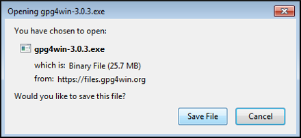
Choisissez un emplacement pour le téléchargement et cliquez sur Enregistrer (Save).
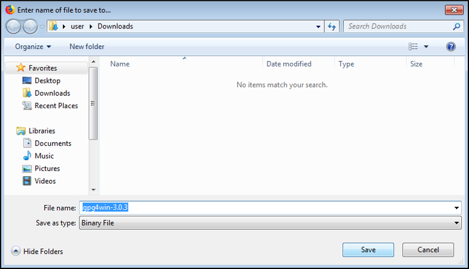
1.1.2. Lancer Gpg4win
Lorsque le téléchargement est terminé, l'afficher dans le dossier.
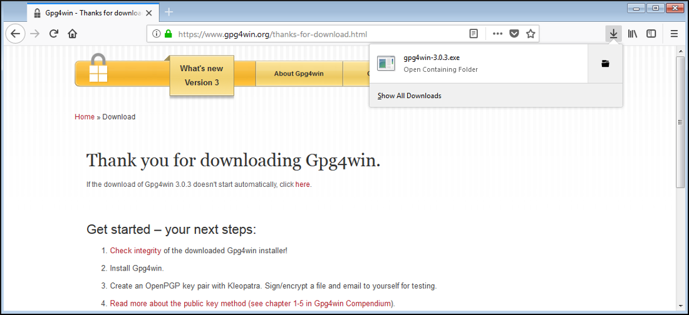
Double-cliquez sur l'exécutable gpg4win téléchargé pour le lancer.

1.2. Utiliser l'Installateur Gpg4win
Un avertissement de sécurité vous sera présenté, cliquez sur Exécuter.

Sélectionnez votre langue et cliquez sur OK.
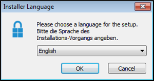
Un écran de bienvenue apparaitra, cliquez sur Suivant.
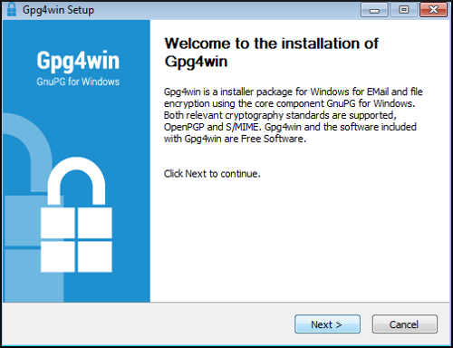
Vous verrez alors la fenêtre de sélection des composants. Vous devrez avoir au minimum Kleopatra de sélectionné pour ce guide. Faites votre choix et cliquez sur Next.
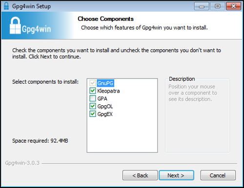
Il vaut mieux laisser le dossier d'installation par défaut, à moins que vous sachiez ce que vous faites. Faites votre choix et cliquez sur Installer.
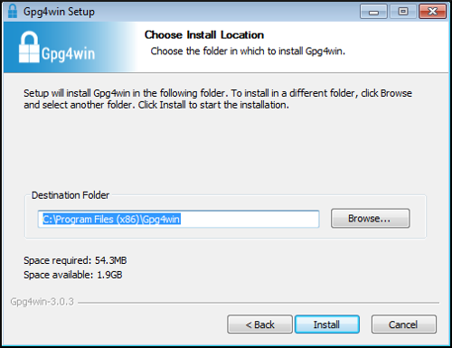
L'installation est terminée, cliquez sur Suivant.

Cliquez sur Fermer.

2. Clef de Signature Monero
Cette rubrique couvre le téléchargement de la clef de signature Monero, la vérification que cette clef est correcte et l'import de la clef dans votre trousseau. Le fichier de hachage qui sera utilisé pour vérifier votre binaire est signé cryptographiquement avec la clef de signature Monero. Afin de vérifier la validité de ce fichier vous devez disposer de la variante publique de cette clef de signature.
2.1. Télécharger la Clef de Signature
Dans un navigateur internet, rendez-vous sur la clef GPG de Fluffypony, qu'il utilise pour signer les binaires Monero. Faites un clic droit sur la page et choisissez Enregistrer sous....
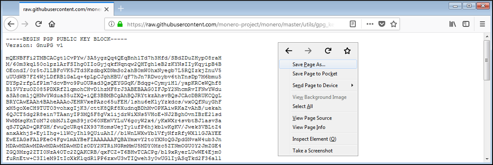
Laissez l'emplacement par défaut, supprimez l'extention .txt pour ne laisser comme nom de fichier que fluffypony.asc et cliquez sur Enregistrer.
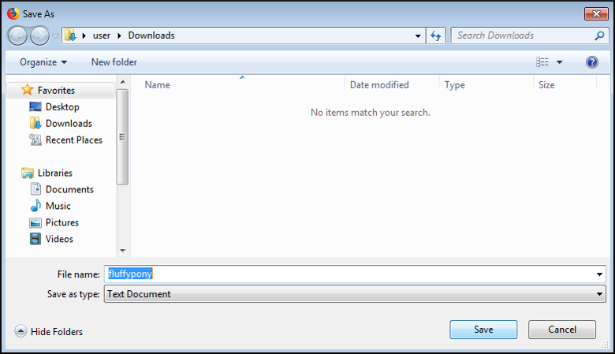
2.2. Initialiser Kleopatra
S'il s'agit de votre première utilisation de Kleopatra vous devrez créer votre propre paire de clefs.
Lancez Kleopatra.

2.2.1. Importer une Clef de Signature
Cliquez sur Importer....
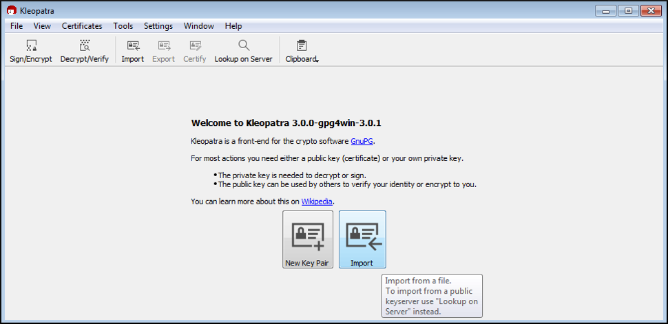
Allez dans le répertoire téléchargements, sélectionnez fluffypony.asc et cliquez sur Ouvrir.
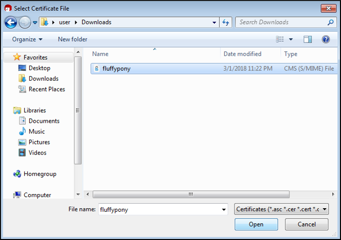
Démarrez le processus de certification de la clef en cliquant sur Oui.
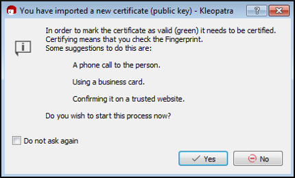
2.2.2. Créer la Paire de Clefs
Démarrez le processus de création de clefs en cliquant sur Oui.
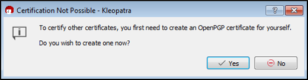
Renseignez quelques information pour Nom et Adresse électronique et cliquez sur suivant.

Vérifiez les informations et cliquez sur Créer.

Définissez un mot de passe et cliquez sur OK.
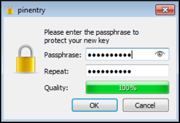
Cliquez sur Terminer.

2.3. Vérifier la Clef de Signature
Contrôlez visuellement que l'empreinte de la clef appartenant à Riccardo Spagni est BDA6BD7042B721C467A9759D7455C5E3C0CDCEB9.

Si l'empreinte EST identique, cochez les cases et cliquez sur Suivant.
Si l'empreinte N'EST PAS identique, NE POURSUIVEZ PAS. Au lieu de cela, supprimez le fichier fluffypony.asc du répertoire téléchargements et retournez à la rubrique 2.1.
Laissez Certifier uniquement pour moi coché et cliquez sur Certifier.
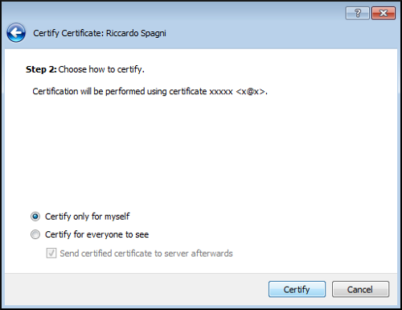
Entrez votre mot de passe et cliquer sur OK.
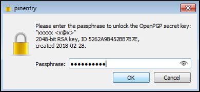
Cliquez sur Terminer.
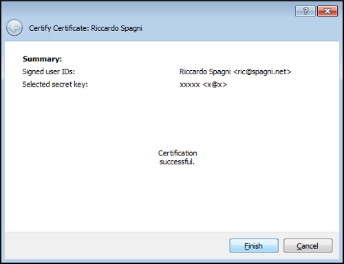
3. Vérification du Fichier de Hachage
Cette rubrique couvre le téléchargement du fichier signé des hachages valides et la vérification de son authenticité.
3.1. Télécharger le Fichier de Hachage
Dans un navigateur internet, rendez-vous sur la page de haches getmonero.org. Faites un clic droit sur la page et sélectionnez Enregistrer sous....

Laissez l'emplacement par défaut et cliquez sur Enregistrer.

3.2. Vérifier le Fichier de Hachage
Dans Kleopatra cliquez sur le bouton Déchiffrer / vérifier....

Allez dans le répertoire téléchargements. Sélectionnez le fichier hashes et cliquez sur Ouvrir.

Kleopatra vous indiquera si la signature du fichier est légitime.
Si la signature est VALABLE vous verrez ceci :

Si la signature est NON VALABLE vous verrez ceci :

Si vous obtenez une signature VALABLE, cliquez sur Ne pas tenir compte et poursuivez.
Si vous obtenez une signature NON VALABLE, NE POURSUIVEZ PAS. Au lieu de cela, supprimez le fichier hashes du répertoire téléchargements et retournez à la rubrique 3.1.
4. Vérification du Fichier Binaire
Cette rubrique couvre le téléchargement du binaire Monero et la vérification de son authenticité.
4.1. Télécharger le Binaire
Dans un navigateur internet, rendez-vous sur la page de téléchargement getmonero.org. Sélectionnez le binaire approprié à votre système.

Laissez Enregistrer sélectionné et cliquez sur OK.

Laissez l'emplacement par défaut et cliquez sur Enregistrer.

4.2. Vérifier le Binaire
Dans un gestionnaire de fichier, allez dans le répertoire Téléchargements. Ouvrez le fichier hashes avec un traitement de texte.
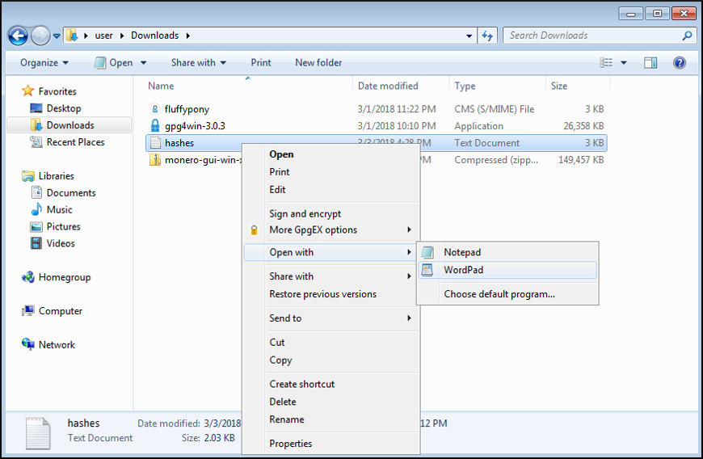
Ouvrir une invite de commande (cmd.exe).

Allez dans le répertoire Downloads avec la commande : cd Downloads.

Calculez le hachage du binaire Monero avec la commande : certUtil -hashfile monero-gui-win-x64-v0.12.0.0.zip SHA256 (Si vous avez téléchargé la version ligne de commande, remplacez par monero-gui-win-x64-v0.12.0.0.zip en conséquence).

Comparez le hachage entre l'invite de commande et le fichier de hachage. Ils doivent être identiques (les espaces peuvent être ignorés).

Si votre hachage EST identique vous en avez terminé avec la vérification ! Vous avez la certitude que les fichiers Monero sont authentiques. Vous pouvez extraire et installer / utiliser les fichiers normalement.
Si votre hachage N'EST PAS identique, NE POURSUIVEZ PAS. Au lieu de cela, supprimez le binaire Monero du répertoire téléchargements et retournez à la rubrique 4.1.